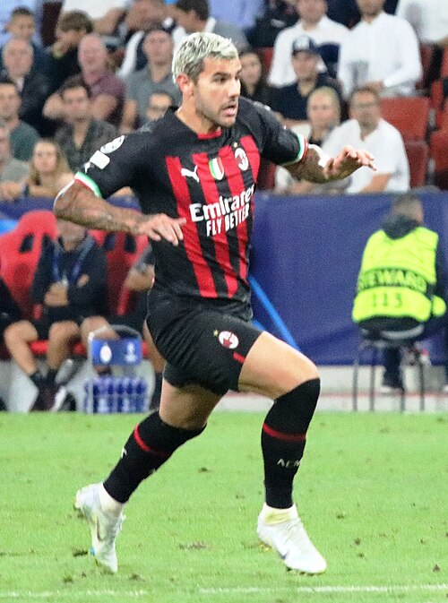
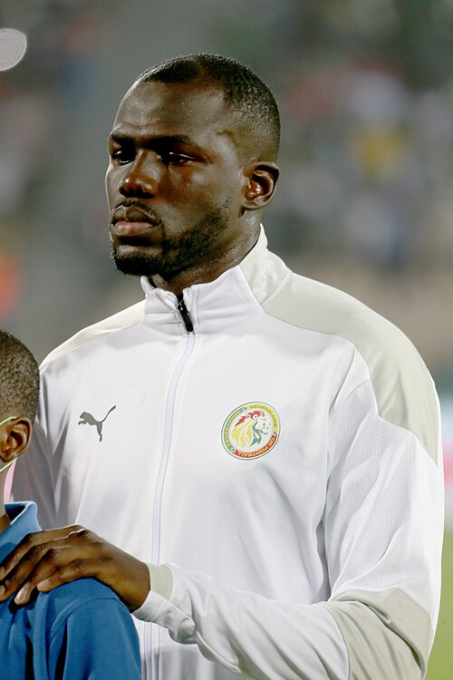
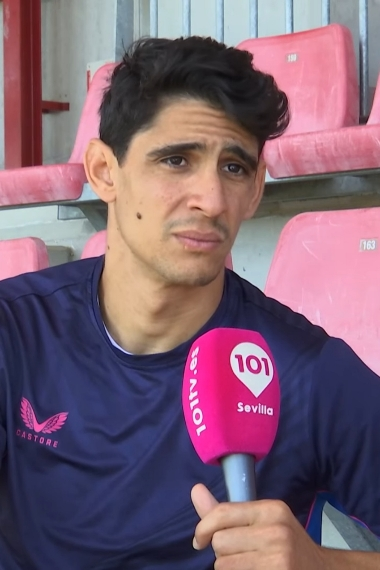

Al Hilal SFC Portfolio
Current roster, squad value, top assets, U23 assets, honours, and market risk.
Al Hilal SFC
Saudi Arabia | Saudi Pro League | Asia | AFC
Roster source: Al Hilal SFC | Checked 2026-05-24
Market Score vs Age
Squad portfolio shape by age and market score.
How to read: Each point shows how squad age relates to market value.
Position Strength
GK, CB, FB, CM, W, CF portfolio balance.
How to read: Bars compare strength across the main football position groups.
Squad Age Curve
Age distribution across current senior, prime, and veteran player groups.
How to read: Use this chart to spot youth pipeline, prime core, and veteran risk.
U23 Pipeline
Young player supply by market score, role security, and squad confidence.
How to read: Higher bars indicate stronger young-player depth inside the current squad.
Current Player Roster
| Player | Age | Position | ARES Score | Market Score | Tier | Trend | Profile |
|---|---|---|---|---|---|---|---|
 Théo Hernandez | 28 | DF | 62.8 | 75.9 | Core Starter | Rising | Open profile |
| Karim Benzema | 38 | FW | 66.7 | 75.8 | Core Starter | Rising | Open profile |
| Sergej Milinković-Savić | 31 | MF | 73.2 | 73.2 | Core Starter | Flat | Open profile |
 Kalidou Koulibaly | 34 | DF | 61.1 | 66.8 | Watchlist | Flat | Open profile |
 Yassine Bounou | 35 | GK | 54.0 | 65.8 | Watchlist | Flat | Open profile |
Club Honours And Trophies
| Competition | Type | Count | Years | Source |
|---|---|---|---|---|
| Type Competition Titles Seasons | Team honour | 1 | https://en.wikipedia.org/wiki/Al_Hilal_SFC | |
| King's Cup 10 1980 , 1982 , 1984 , 1989 , 2015 , 2017 , 2019 | Team honour | 10 | 1980, 1982, 1984, 1989, 2015, 2017, 2019, 2022 | https://en.wikipedia.org/wiki/Al_Hilal_SFC |
| Saudi Super Cup 5 2015 , 2018 , 2021 , 2023 , 2024 | Team honour | 5 | 2015, 2018, 2021, 2023, 2024 | https://en.wikipedia.org/wiki/Al_Hilal_SFC |
| Crown Prince Cup 13 1963 | Team honour | 13 | 1963, 1994, 1999, 2003, 2004, 2005, 2007, 2008 | https://en.wikipedia.org/wiki/Al_Hilal_SFC |
| Federation Cup 7 1986 | Team honour | 8 | 1986, 1989, 1992, 1995, 1999, 2000, 2004, 2005 | https://en.wikipedia.org/wiki/Al_Hilal_SFC |
| Founder's Cup 1 1999 | Team honour | 2 | 1999, 2000 | https://en.wikipedia.org/wiki/Al_Hilal_SFC |
| Continental Asian Club Championship / AFC Champions League 4 1991 , 2000 , 2019 , 2021 | Team honour | 4 | 1991, 2000, 2019, 2021 | https://en.wikipedia.org/wiki/Al_Hilal_SFC |
| Asian Cup Winners' Cup 2 s 1997 , 2002 | Team honour | 2 | 1997, 2002 | https://en.wikipedia.org/wiki/Al_Hilal_SFC |
| Asian Super Cup 2 s 1997 , 2000 | Team honour | 2 | 1997, 2000 | https://en.wikipedia.org/wiki/Al_Hilal_SFC |
| Regional (GCC Region) Gulf Club Champions Cup 2 1986 , 1998 | Team honour | 2 | 1986, 1998 | https://en.wikipedia.org/wiki/Al_Hilal_SFC |
| Regional (Arab Region) Arab Club Champions Cup 2 1996 , 1997 | Team honour | 2 | 1996, 1997 | https://en.wikipedia.org/wiki/Al_Hilal_SFC |
| Arab Cup Winners' Cup 1 2000 | Team honour | 1 | 2000 | https://en.wikipedia.org/wiki/Al_Hilal_SFC |
| Arab Super Cup 1 2001 | Team honour | 1 | 2001 | https://en.wikipedia.org/wiki/Al_Hilal_SFC |
| Worldwide FIFA Club World Cup | Team honour | 1 | https://en.wikipedia.org/wiki/Al_Hilal_SFC | |
| record | Team honour | 1 | https://en.wikipedia.org/wiki/Al_Hilal_SFC | |
| S shared record | Team honour | 1 | https://en.wikipedia.org/wiki/Al_Hilal_SFC |
Transfer Needs
| Need | Position | Reason | Priority | Suggested Profile |
|---|---|---|---|---|
| Role security and U23 depth | Depth risk review | Squad portfolio balance uses ARES score, market score, age curve, and roster coverage. | Medium | Current roster players sorted by Market Score |
Source And Rights Note
Current roster and honours rows are sourced from Wikipedia where structured enough. Club images use safe non-logo Wikimedia Commons media only when a creator, license, source URL, checked date, and rights status are stored in the image registry; otherwise ARES shows a fallback visual.